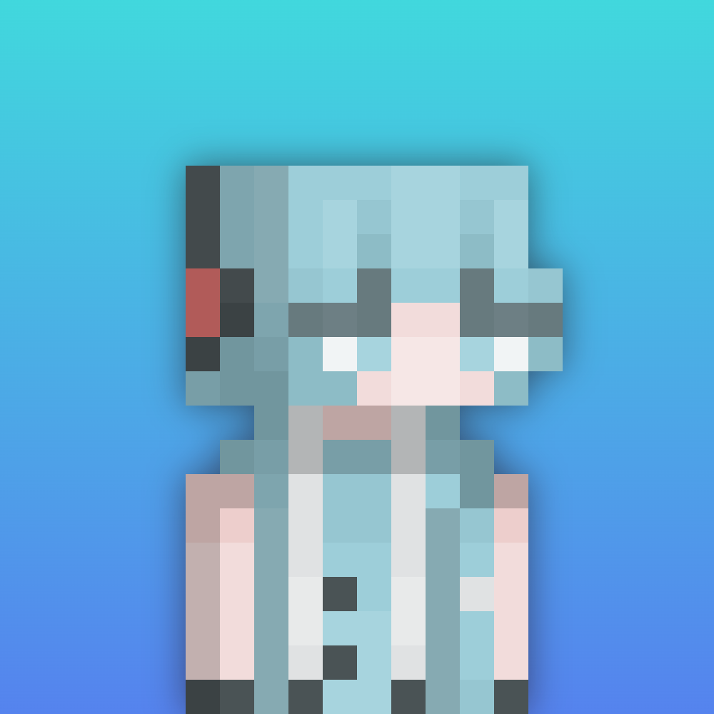

👋 关于我

你好呀！我是 MuSHAN，一名热爱编程的高中生。
2026 年开始接触前端，从 HTML 搭积木开始，慢慢学会了 CSS 装修、JavaScript 互动。现在正朝着全栈开发前进，目标是做出能帮助别人的实用工具。
喜欢阅读、乒乓球、研究数码。这个博客用来记录我的学习笔记和生活思考，欢迎交流～
✨ 博客还在建设中，敬请期待更多内容 ✨

你好呀！我是 MuSHAN，一名热爱编程的高中生。
2026 年开始接触前端，从 HTML 搭积木开始，慢慢学会了 CSS 装修、JavaScript 互动。现在正朝着全栈开发前进，目标是做出能帮助别人的实用工具。
喜欢阅读、乒乓球、研究数码。这个博客用来记录我的学习笔记和生活思考，欢迎交流～
✨ 博客还在建设中，敬请期待更多内容 ✨